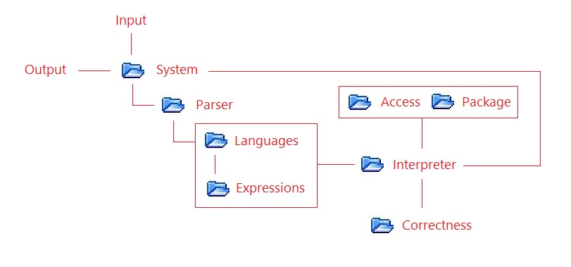
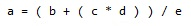

How can I make my own programming language ?
-
The basic question is whether you want to embrace the all-purpose compiler philosophy. That is, if you want to create a language that can be translated with code from other well-known and used programming languages. Or you want to create a programming language in the classic sense. The other question is whether this language should be distributed, or whether it is for personal or internal company use.
I want to create a language that facilitates programming by embracing this new compiler philosophy and for internal corporate purposes.
answer-
If you want to do this, you simply need to make a framework for the Core 3.0 compiler that implements the desired programming language.
I want to create a programming language in the classical sense.
answer-
To do this, there are tools to study and use. If so, you need to be well aware that you are embarking on the path of programming language engineering. This road is difficult, long and requires a lot of knowledge and a lot of work. Given and considering that history has reported cases of languages that have not been successful, the advice I would like to give is to have a prototype of the programming language created, and in a short time, using Core 3.0.
Why can't I create a language in the classical sense with Core 3.0 ?
answer-
Core 3.0 is a tool that makes programming much easier. But it's not a perfect system. In this sense. Typically a framework leads to languages with the number of statement types exceeding one hundred. Predicting all the possible syntactically and semantically correct combinations is a huge job, and one that I don't do. Core 3.0 is a system that, if it receives a correct program as input, produces correct output. For programs that are incorrect in the sense of semantics, it can produce incorrect code. But the basic consideration is that it is not convenient to predict and manage all the possible errors of a language with such a large number of statement types. And since the rule of pragmatism applies to me, I prefer to concentrate on constructive work and do not encounter problems of language perfection which lead to a large amount of work, but without practical benefits.
Are there other reasons why the created languages are not suitable for distribution?
answer-
Surely. Core 3.0 produces code belonging to various technologies. Typically those who use a programming language expect to execute the code directly. Instead, Core 3.0 produces code belonging to different technologies that clearly require those who have the experience and awareness to configure the environments and manage the generated code. Which will subsequently be executable following these processes.
Who can program with Core 3.0?
answer-
Anyone can program with Core 3.0! From beginner to expert. Core 3.0 was also created to allow beginners or those who do not have a thorough knowledge of the technologies behind programming to program. As long as there are reference figures within the company who are experts in order to be able to support beginners in difficulties, explaining to them how the language should be used and the exceptions. The expert par excellence is the one or are those who have actively participated in the process of creating the framework for the language.
-
Is Core 3.0 a compiler belonging to a well-known typology of compilers?
-
The answer is no. The term "All-Purpose Multi-Technology Compiler" is used to identify this product. There is currently no scientific branch that deals with compilers that translate their programming languages into other languages and technologies used. Core 3.0 was born from an engineering-technological idea, from the need that those who program would have to easily define a language that implements their solutions. Perhaps this need has not been paid attention to by the scientific world, which is very focused on great steps forward, in great technologies for progress, and which has perhaps overlooked something which fortunately was nevertheless achieved within the world of simple engineering.
Is Core 3.0 a source-to-source compiler or a transpiler?
answer-
Core 3.0 does not translate a well-known programming language into another well-known programming language, but allows you to quickly and easily define your own language according to your implementation needs and translate it into code of other well-known languages. For this reason it belongs and does not belong to the category of source-to-source compilers or transpilers, but brings together the concepts of both with new concepts.
So why is it "all-purpose"?
answer-
For reasons related to the fact that it is possible to do almost anything. But for reasons that date back to the history of computing and in particular to the BASIC language. BASIC is the acronym for Beginner's All-Purpose Symbolic Instruction Code. And it is a language through which you can easily do anything. In our imagination, even languages created with Core 3.0 can have this feature. However the difference is that it is not for beginners. So we want to remove the "for beginners" from the acronym BASIC.
So why is it "multi-technology"?
answer-
it is also multi-technology because nowadays to create something you have to use from five to twenty technologies put together.
Is it difficult to program the compiler, then make a framework?
answer-
No it's not difficult. In fact it's something very nice to do. The Core 3.0 programming language has been developed with all the features to quickly and easily translate your language into other languages and technologies.
Is Core 3.0 an interpreter or a compiler?
answer-
Core 3.0 is a compiler with the Core 3.0 compiler language inside it which is an interpreted language. So we made an interpreter to compile.
-
How does the Core 3.0 compiler work?
-
The Core 3.0 compiler is software built for modules. Which can be explained in a simple way through a simple diagram that must be noted down. The theory around its structure and functioning is complex and has required years of work. But something in terms of explanation can be provided, indeed it is necessary to provide it.
Here is the Compiler module scheme.
answer- 
Let's give a brief explanation of the modules.
answer-
System
This module takes care of checking what the compilation options are, and manages all the system entities. Such as files, reading and writing files. Input from command prompts and more. -
Parser
The Parser is responsible for recognizing the statements of the various languages and verifying their syntactic correctness. -
Language
The Languages module deals with associating semantics with programs written in the various languages that have been defined.
-
Expressions
The Expressions module deals with expressions intended as operations between variables. This module is a separate module, because it requires particular attention. -
Interpreter
The interpreter interprets the code associated with the semantics of languages and expressions. And it verifies the package access rules and also the semantic correctness of the program.
-
Access & Package
The Access module and the Package module are used to verify correct access to the public and private environment. -
Correctness
The Correctness module is used to verify the correctness of all operations performed by the interpreter and provide error messages.
What is Core 3.0 Compiler Language?
answer-
It is the language that is interpreted by the interpreter and whose programs written with it are associated with the semantics of every other defined user language. It therefore serves to translate user languages into the languages of various technologies.
What are the features of the Core 3.0 Compiler Language?
answerBriefly we can say that it implements:
-
Primitive Types
-
Vectors
-
Objects
-
Structures
-
Scope Rules
-
Functions
-
Parameters
-
Reference & Values
-
Public and Private Envirorment
-
Function Calls
-
Return Values
-
Cycles
-
Condictions
-
Operators & Priority
-
Calculation of Expressions
-
Conversion Operators
-
System Calls
-
and more
-
I would also like to understand with some examples what architecture 4.0 is and how it works?
-
The 4.0 architecture allows the translation of code into the ASSEMBLER language. It is designed above all for special processors, whose owners need to create a high-level programming language to program them.
Here's an example of what this means.
answer-
Let's take the case of an expression that must be translated into assembly language :
After pre-processing we have:
And an example of ASM pseudo code for the algorithm translation based on accumulator and stack could be the following:

This is just a simple example, in fact we don't know a priori whether the processor has a stack. You will understand that these are very complex operations.
In the case of architecture 4.0, would the compiler compile only in Assembler?
answer-
This is not true, it can still continue to be multi-technology and also write code in other languages, in order to obtain complete applications.
-
Are there possible improvements to the system?
-
The answer is no. There are branches of science whose theory has a beginning and an end. And others whose theory has a beginning but not an end, because it makes use of every scientific discovery inherent to it that is made. In our imagination, he thought of creating a product whose theory has a beginning and an end. By knowing everything there is to know about the theory, you are an expert at the highest level. This is the non-trivial advantage of having made a finished product in theory and in practice.
Are other products starting from Core 3.0 under study?
answer-
Once again, the answer is no. At a study and experimental level I cultivate theories regarding:
- Combinatorics
- Knowledge Representation
- Algebraic Calculation
- Problem Solvers
- and more
With the sole objective of extracting some scientific value from it. I'm not talking about something that has scientific relevance. In fact, my results in these fields should surpass the state of the art. This is difficult and furthermore it is not my intent and I don't have the resources and time to do it. So it all boils down to studies from which I can derive some scientific value "for me".
What could be the role of Core 3.0 with the results, for example, achieved today by artificial intelligence?
answer-
I can believe in a constructive approach and in the use of both technologies. However, I don't have enough knowledge outside of the topic of "compilers" to find the practical applications of symbiosis between these very modern technologies and my product.
-
Other Questions?
-
For other questions, please write an email to info@core30compiler.com